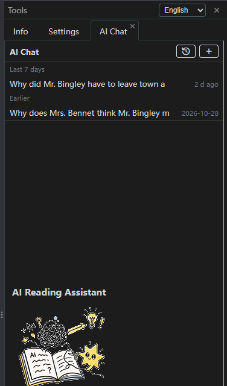

Chat Sessions
A run of related questions about one book belongs to a single session. Start a new one when you change topic — the answers stay more focused.
New chat
Click New chat in the chat panel; everything you ask from then on belongs to that session.
History
- The panel lists this book's earlier sessions, newest first.
- Click any one to switch to it and continue that conversation.
- Times are shown relative to now: Just now, N min ago, N h ago, N d ago.

Tips
- Keep one session to one topic; answers are more accurate.
- Sessions are kept per book, so opening another book does not mix them up.